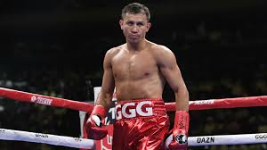
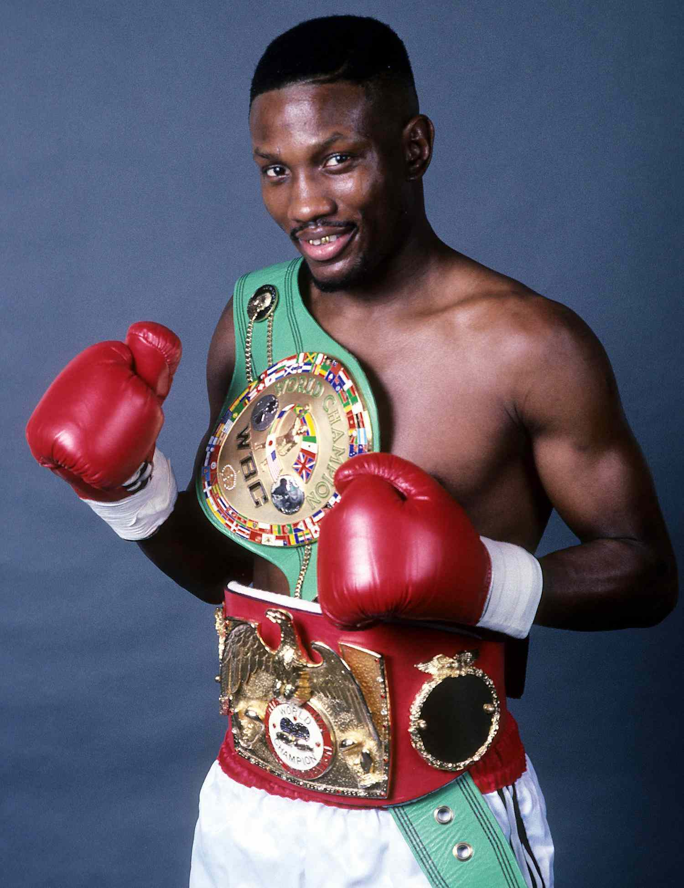
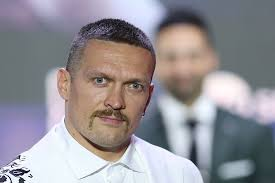
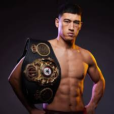
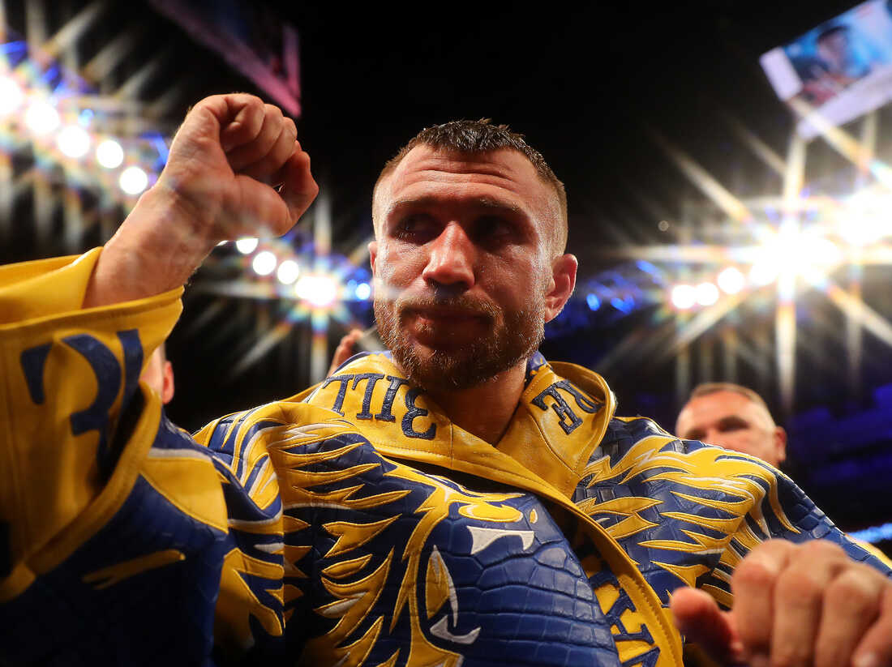
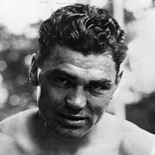

1. Muhammed Ali
Muhammed Ali, boks tarihinin en büyük efsanelerinden biridir. Hızlı ayakları, benzersiz teknikleri ve cesur kişiliğiyle tanınır.
Wikipedia Sayfası
2. Gennadiy Golovkin
Golovkin, güçlü vuruşlarıyla tanınır ve profesyonel kariyerinde birçok unvan kazandı.
Wikipedia Sayfası
3. Mike Tyson
Mike Tyson, agresif dövüş tarzı ve inanılmaz gücüyle tanınan eski ağır sıklet şampiyonudur.
Wikipedia Sayfası
4. Pernell Whittaker
Whittaker, savunma teknikleriyle ünlüdür ve birçok dünya şampiyonluğu kazandı.
Wikipedia Sayfası

6. Dmitry Bivol
Bivol, etkili savunması ve güçlü vuruşlarıyla dikkat çeken bir hafif ağır sıklet şampiyonudur.
Wikipedia Sayfası
7. Vasyl Lomachenko
Lomachenko, teknik ve hız açısından mükemmel bir boksördür, birden fazla dünya şampiyonluğu kazanmıştır.
Wikipedia Sayfası
8. Tommy Morrison
Morrison, agresif dövüş tarzı ve etkileyici nakavtlarıyla tanınan eski boksördür.
Wikipedia Sayfası
9. Jack Dempsey
Dempsey, boksun "altın çağı"nın efsanelerinden biridir ve ağır sıklet şampiyonudur.
Wikipedia Sayfası
10. Jack Johnson
Johnson, tarihindeki ilk siyahi ağır sıklet şampiyonudur ve önemli bir figürdür.
Wikipedia Sayfası